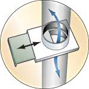

Build A Basement Root Cellar
Storing root crops in a passively cooled cellar is one of the most efficient ways to preserve food.
By Steve Maxwell
December 2004/January 2005
The great thing about cabbage, carrots and all the other crops, as David Cavagnaro and Nancy Bubel describe in the two previous articles, is all you need to store them for months is a cold, well-ventilated space. A spare refrigerator works pretty well, but even better and more spacious is a real root cellar.
Traditionally, this cold room was an underground space built under or near the home, insulated by the ground and vented so cold air could flow in and warm air out in the fall. Then when winter temperatures arrived, the vents were closed, and the cellar stayed cold but not freezing.
Most modern basements are too warm for long-term winter storage, but you can create an indoor version of the cellars that have long served homesteaders well by walling off a basement corner and adding the vents, as shown in the drawing above. The two vents (#1 in the illustration that can be seen in the gallery) create a siphon effect that lets you regulate the flow of cold outside air into the insulated cellar room, allowing the temperature to remain near freezing through the winter months.
Fred Matlack of Vera Cruz, Pa., developed this nifty design, and the cellar room he built in his basement has worked just as he planned. “You just need to watch the temperature to be sure you close the vents before the temperature drops below freezing, which would damage some crops,” Matlack says.
Several universal truths remain constant that will help you create an optimal root cellar, even though every basement situation is unique. The first is location. Because you’ll need access to the outdoors for fresh air, choose a cellar position that includes a window. It’s possible to bore holes through a basement wall for the 3- or 4-inch vent pipes you’ll need to install, but it’s a whole lot easier to simply remove the glass from a window, replace it with plywood and then run your pipes through holes in the wood. In cold regions, you can create an insulated panel to replace window glass. Laminating a layer of half-inch-thick exterior-grade plywood on each side of a piece of 1- or 2-inch-thick extruded polystyrene foam is a terrific way to make an insulated panel for vent pipe access. Polyurethane construction adhesive is perfect for holding the foam-and-wood sandwich together.
When it comes to any basement cellar, the exterior walls create ideal interior temperatures. This is what delivers the cooling action, and the more masonry surface you’ve got, the better. That’s why you’ll want to choose a corner location for your installation if you can. This offers maximum exposure to exterior walls while minimizing the need to build and insulate interior walls. And if you’ve got a choice, select a spot with the highest soil height outside. Does one of your possible options include northern exposure? Terrific! That’s great if you can get it.
After you’ve picked your cellar location and replaced the window glass with a solid panel that accommodates the vent pipes, turn your attention to the walls. Find yourself a helper, grab a sheet or two of plywood or wafer board, and get ready to use your imagination. It’s amazing how temporarily propping up sheet materials can help you imagine the floor plan of a new room, leading you to better finished results. How long should your cellar be? How wide? Is a 3-foot-wide door big enough? These kinds of questions are much easier to answer when you’ve got something to hold up, look at, move around and tweak.
With the footprint and door location of your cellar finalized, mark the relevant outlines on the floor with a big felt-tipped marker. Although you’ll need to build some kind of wood frame for the wall and doorway, it needn’t be as beefy as a typical load-bearing wall for a house. You can extend stud spacing beyond 24 inches on center if you need to economize, but regardless of the wall design, you’ll have to secure it at the top and bottom. A few tricks can make this happen.
As you custom-cut your wall studs to length, make them short enough to leave an eighth- to a quarter-inch gap between the top of the wall and the joists above when combined with the top and bottom plates (#2). That way, you’ll have no trouble tilting the wall up into position (be sure to check that it’s plumb by using a level), yet you still can secure it with 3½-inch #10 screws driven up through the top plate and into the bottom edge of the joists. Drive a softwood wedge dabbed with glue into the gap before driving the screws home.
Basement floors are often damp, so consider using composite deck material instead of wood for the bottom wall plate (#3). Choose a brand that’s solid all the way through, then cut and nail it just like regular lumber. Composites are rot-proof and won’t contribute musty smells to your cellar, even if they get wet. Anchor the bottom of your cellar wall to a concrete floor with construction adhesive and concrete nails or screws driven into pre-drilled holes.
Insulation is your next challenge, and good reasons exist to consider using rigid sheets of foam (#4) instead of traditional fiberglass batts. The most important is moisture resistance. Any basement is likely to get damp from time to time, and fiberglass has almost no ability to resist mold growth and deterioration when water is present. Foam, on the other hand, tolerates moisture much better. It’s also easier to use than fiberglass, and it’s non-irritating. Extruded polystyrene is especially good in this regard. It’s also a highly effective thermal insulator. Just be aware that some jurisdictions require foam to be covered with a fire-resistant sheet to meet code specifications. As you plan your insulation strategy, be sure to include the ceiling of your cellar. Warmth coming down from heated areas above could raise cellar temperatures too high for the food.
A key feature of the basement cellar is the two-vent design. To function optimally, space the interior ends of the intake and exhaust pipes as far apart as possible. Also, you’ll need to plan your shelf layout to allow as much top-to-bottom air movement as you can achieve. This is where ceiling-mounted shelves can really help (#5). The best idea is to use hanging metal wire frames that support shelves made of 2-by-12-inch lumber you cut yourself. Cover the vent openings with screen to keep out insects and mice, and if you want to really cool the room down quickly, add a little exhaust fan to supplement the natural flow of cool air down into the room.
Steve Maxwell lives and gardens with his family on Mount Island, Ontario.
 Len Churchhill The two vents (#1 in the illustration above) create a siphon effect that lets you regulate the flow of cold outside air into the insulated cellar room, allowing the temperature to remain near freezing through the winter months. As you custom-cut your wall studs to length, make them short enough to leave an eighth- to a quarter-inch gap between the top of the wall and the joists above when combined with the top and bottom plates (#2). Basement floors are often damp, so consider using composite deck material instead of wood for the bottom wall plate (#3). Insulation is your next challenge, and good reasons exist to consider using rigid sheets of foam (#4) instead of traditional fiberglass batts. The most important is moisture resistance. |
 Len Churchhill |
|